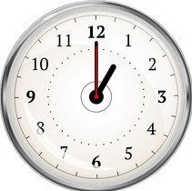
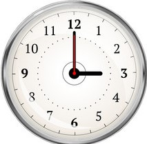

Consistent Clocks
Next DST event: March 13, 2022 @ 2:00 AM
Anti-Daylight Savings Time resource hub
 
Points Against DST
1.Emergent public health issues (car accidents; heart attacks)
1.Persistent health effects due to circadian disruption (cardiovascular; neurological/psychiatric
3."Lost Hours" & "Cloned Hours" a problem for recordkeeping
4.Potential commercial disruption (productivity hits; scheduling errors)
5.Jurisdictional inconsistency (extra hour adjustment over time zone)
6."Energy savings" math is unclear (or possibly negative) in LED era
7.Disruption of regulated animal behaviors that normally follow human patterns